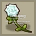
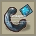
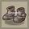

+STATUS Equip Credit : Poysian (ยืมเ้ค้ามาโมเอา)
จะเพิ่มเติมหลายๆอย่างเข้าไปทีหลังเน้อ
Equipment
[Pic] - [Name] - [Type] - [Require] - [Status] - [Source] - [Remark]
Str Option Type

- [Festival Fox Ear] - [Head Acc.+Head] - [Level 1] -
[Def+1, MDef+1, HP+100, Str+3, Mag-2, Vit+1] - [Happy New Years TicketII]

- [Angel White Rose] - [Face+Face Acc.] - [Level 1] -
[Def+1, MDef+1, HP+50, Str+3] - [Special Ticket 7]

- [Fairy Tale Mentle] - [Chest Acc.] - [Level 1] -
[HP+100 SP+50 STR+3 DEF1 MDEF1] - [Special Ticket 11]

- [School Blouse] - [Upper Armor] - [Level 1] -
[Def+2, MDef+2, HP+100, Str+3, Mag+2, Vit+1] - [Special Ticket 14]

- [] - [Long Boots] - [Level 70, Male] -
[Def+10, MDef+8, Str+1, Vit+1] - [600,000 ecoin at Attraction Zone]
Dex Option Type

- [DoReMi Ribbon] - [Head+Head Acc.] - [Level 1] -
[Def+1, MDef+1, HP+100, Dex+3] - [Music Festival Ticket]

- [Melody Earrings] - [Face Acc.+Face] - [Level 1] -
[Def+1, MDef+1, HP+50, SP+50, Dex+3] - [Music Festival Ticket]

- [Archer Riders Jacket] - [Upper Armor] - [Level 1] -
[Def+2, MDef+2, Mag-1, Dex+2, Agi+1] - [Zodiac Ticket]

- [Encouragement Boots] - [Boots] - [Level 1] -
[Def+8, MDef+10, Dex+2, SAvoid+10, MResist-10] - [Special Ticket 5, Special Ticket All Star]
Int Option Type

- [Scarlet Rose] - [Face+Face Acc.] - [Level 1] -
[Def+1, MDef+1, HP+50, Int+5] - [Happy New Year TicketI, Special Ticket All Star]

- [Old Black Mantle] - [Chest Acc.] - [Level 1] -
[Def+1, MDef+1, HP+100, Mag+2, Dex1, Int+3] - [Special Ticket 14]

- [Churchman Suit] - [Upper Armor] - [Level 1] -
[Def+4, MDef+6, HP+100, Str-2, Dex+1, Int+3] - [Halloween TicketII]
Vit Option Type

- [Pae Yim Mask(M), Sim Yim Mask(W)] - [Full Face] - [Level 1] -
[Def+5, MDef+5, Vit+3] - [Chinese's New Years Event]

- [Angel Dots Scarf] - [Chest Acc.] - [Level 1] -
[Def+1, MDef+1, HP+50, Vit+3] - [Special Ticket 7]

- [Dynamic Cheer Leader Uniform] - [Upper Armor] - [Level 1] -
[Def+2, MDef+2, HP+100, Vit+3] - [Special Ticket 10]

- [Bernado Clothe] - [Upper Armor] - [Level 1] -
[Def+10, MDef+10, HP+100, Mag+2, Vit+3, Int+1] - [Special Ticket SuperDX]
Agi Option Type

- [Silver Amulet Earrings] - [Face+Face Acc.] - [Level 1] -
[Def+1, MDef+1, HP+100, Mag-2, Dex+1, Agi+3] - [Halloween TicketII]

- [Tennis Training Suit] - [Upper Armor] - [Level 1] -
[Def+2, Mdef+2, HP+100, SP+50, Str+1, Agi+2] - [Special Ticket 10]

- [Short Boots(White)] - [Boots] - [Level 1] -
[Def+5, MDef+5, Agi+2] - [Special Ticket 5, Special Ticket All Star]
Legend

- [Aura Helmet] - [Head Acc.+Head] - [Level 1] -
[Str+3, Dex+3, Int+3, Vit+3, Agi+3, Mag+3] - [RvR Online Tournament(1st Place)]
- [2nd Anniversary Broach] - [Chest Acc.] - [Level 1] -
[Def+2, MDef+2, Str+5, Dex+5, Int+5, Vit+5, Agi+5, Mag+5] - [2nd Anniversary Events]